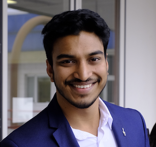

PhD Candidate, Computer Science
Thomas Routhu
I build machine learning systems that turn raw sensor signal into decisions — anomaly detection, predictive maintenance, and edge AI for infrastructure that has to keep working.

About
I'm a PhD candidate in Computer Science at the Università di Pavia, currently a visiting researcher at the OWL University of Applied Sciences in Lemgo, Germany. My work sits between machine learning and civil infrastructure: I design data pipelines for vibration and inclinometer sensors on bridge structures, then build deep learning models that can flag the anomalies worth a human's attention.
Before this, I worked as an industrial PhD researcher with Milano Serravalle – Milano Tangenziali, programmed collaborative robots as a working student, and did materials-testing research in India. Across all of it, the throughline is the same: large, messy, real-world datasets, and the job of making them trustworthy and useful.
- Based in
- Pavia, Italy / Lemgo, Germany
- Focus
- Deep learning, time-series & sensor data, edge AI
- Currently
- Visiting PhD Student, OWL University of Applied Sciences
Experience
-
2024 — Present
Visiting PhD Student
OWL University of Applied Sciences, Institute Industrial IT · Lemgo, Germany
Run end-to-end data workflows for vibration and inclinometer measurements from 100+ sensors across multiple bridge spans, apply deep learning to multivariate time-series for anomaly detection, and set the KPIs used to evaluate that detection performance.
-
2023 — Present
Industrial PhD — Computer Science / Machine Learning
Milano Serravalle – Milano Tangenziali S.p.A. · Milan, Italy
Build data collection, preprocessing, and annotation workflows for sensor-based infrastructure monitoring, and develop the reporting frameworks used to track model and workflow performance.
-
Nov 2023 — Jan 2024
Samsung Innovation Campus
Samsung Italia · Pavia, Italy
Advanced industry training in AI, IoT, and digital transformation.
-
2022 — 2023
Robotics Programmer — Working Student
ReHouseit – Società Benefit · Milan, Italy
Designed automated workflows for collaborative robot operations and built CAM-translation and real-time simulation tools that improved operational efficiency by 30%.
-
2020
Research Associate
BML Munjal University · Gurgaon, India
Researched tool-coating optimization, improving tool-life performance by 25%, and contributed to a peer-reviewed journal publication.
Skills
Programming
- Python
- SQL
- MATLAB
Machine learning & AI
- Deep learning
- Artificial neural networks
- Anomaly detection
- Predictive modeling
- Scikit-learn
- TensorFlow
- PyTorch
Data science & analysis
- Time-series analysis
- Sensor data analysis
- Feature engineering
- Statistical analysis
- NumPy
- Pandas
- Matplotlib
- Seaborn
Data engineering & operations
- Data pipeline design
- ETL
- Data quality assurance
- Data annotation
- KPI development
Tools
- Git
- Docker
- Linux
- OpenCV
- Tableau
- Power BI
- ANSYS
- SolidWorks
Selected publications
-
Modular Digital Twin for Air Handling Units
Research on data-driven digital twin systems.
-
Efficient Storage by Filtering of Large Sensor Data for Infrastructure Monitoring
Data optimization for large-scale sensor datasets.
-
Applying AI in the Area of Automation Systems: Overview and Challenges
AI/ML applications in automation systems.
-
Probabilistic Framework for Multi-Vehicle Tracking Using Distributed Accelerometer Sensors
AI/ML applications in automation systems.
Education
-
PhD in Computer Science — Data Science & Machine Learning Focus
-
Master's Degree in Robotics and Mechatronics — Industrial Automation
-
Master of Science in Informatics
-
Bachelor of Technology in Mechanical Engineering
Get in touch
Open to research collaborations, industrial ML/AI roles, and conversations about infrastructure monitoring.